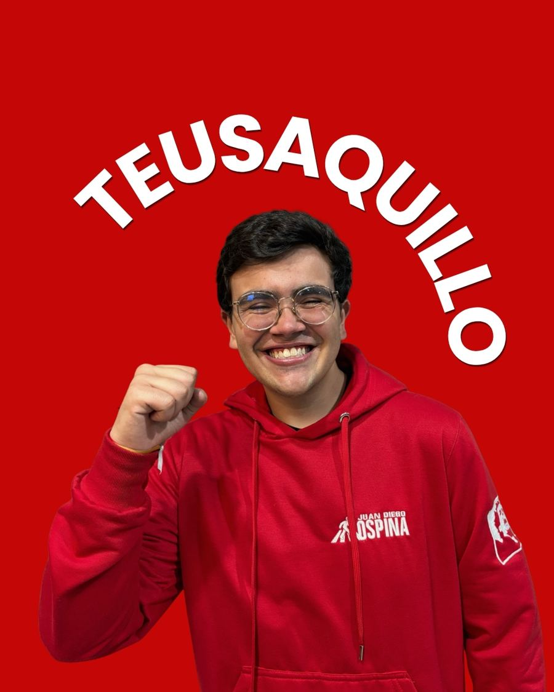
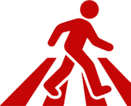
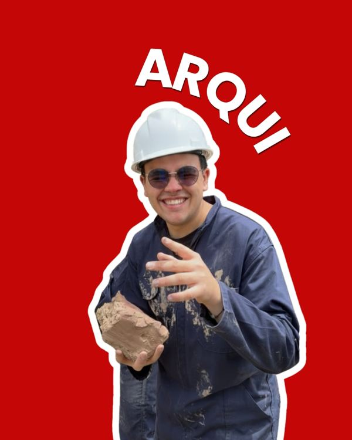
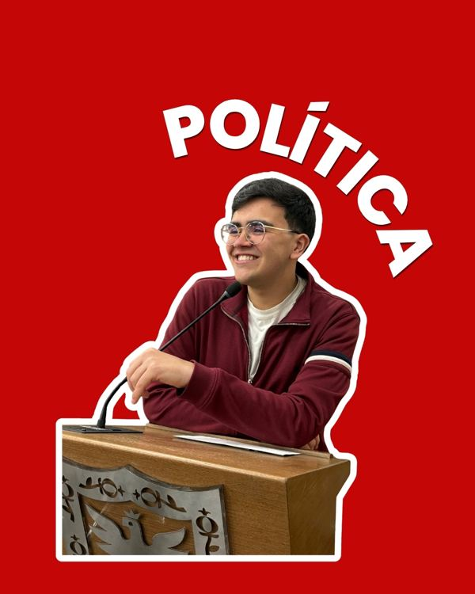
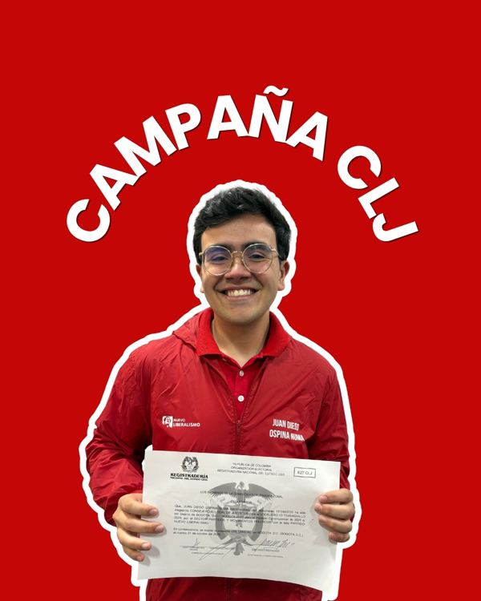
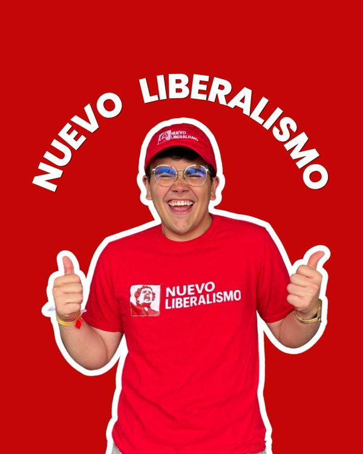
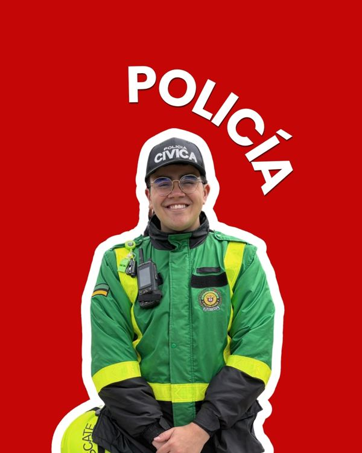
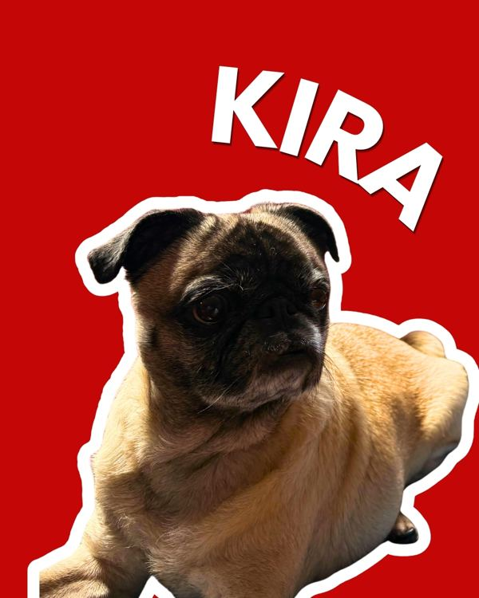

Politecto X Teusaquillo
Soy Juan Diego Ospina Numa, un joven de Teusaquillo que une la política y la arquitectura para transformar la ciudad desde lo social. Aquí ves lo que hago, en cifras y al día.

Lo que he hecho por Teusaquillo
Cada recorrido, cada encuentro con vecinos y cada gestión como consejero se suma aquí. La página se actualiza todas las mañanas.

El Plan Especial de Manejo y Protección cuida el patrimonio de nuestras casas y barrios. Como arquitecto y vecino, lo defiendo.
Liderazgo que ya está en marcha
Antes de pedir nada, esto es lo que he construido.
Lo hecho, con fecha
Como Consejero de Juventud, como vecino y como militante. Cada entrada es algo que pasó de verdad.
Lo último que publiqué
Lo que hago en el territorio también lo cuento en redes. Síguelo de cerca.
100% rolo y teusaquillense
- He vivido 20 años en el Park Way, el lugar que considero mi hogar y el motor de mis sueños.
- Estudio Arquitectura (décimo semestre) y Ciencia Política (quinto semestre) en la Pontificia Universidad Javeriana.
- Policía cívico, comprometido con el servicio a la comunidad.
- Coleccionista de monedas y billetes antiguos, apasionado por la historia y la memoria.
- Tengo una perrita, Kira, mi compañera de vida.






Por lo que trabajo
Educación y cultura ciudadana
Fomentar valores, respeto y corresponsabilidad en nuestra comunidad.
Ciudad desde la juventud
Hacer de la voz joven la base para diseñar el futuro urbano.
Articulación de actores jóvenes
Tejer redes entre colectivos, estudiantes y organizaciones para transformar el territorio.
Palabras que deberías conocer
Las uso todos los días. Esto es lo que significan y cómo las aplico en el territorio.
Politecto
Acrónimo de político y arquitectoPersona que diseña y gestiona proyectos públicos y laboratorios urbanos, aplicando principios arquitectónicos para mejorar el entorno y la convivencia ciudadana.
Civicultor
De cívico y cultorPersona que siembra, fomenta y consolida la cultura ciudadana, el orden y el sentido de pertenencia territorial, promoviendo el cuidado del espacio público y la convivencia armónica en su comunidad.
Civiparche
De cívico y parcheEncuentro o grupo de jóvenes en el espacio público que tiene como fin promover la cultura ciudadana, la apropiación del territorio y acciones constructivas para el entorno local.
Seguritecto
De seguridad y arquitectoPersona que diseña e implementa estrategias de seguridad ciudadana a partir de la transformación física del espacio urbano, asegurando entornos iluminados y organizados.
Barrios donde he estado
Recorridos, encuentros y gestiones por barrio.
Contáctame
Escríbeme lo que quieras sobre Teusaquillo. Lo leo yo y te respondo.